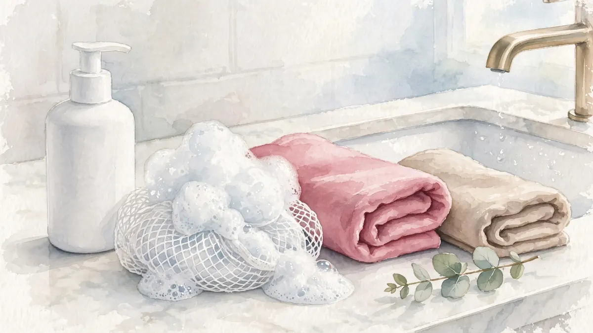
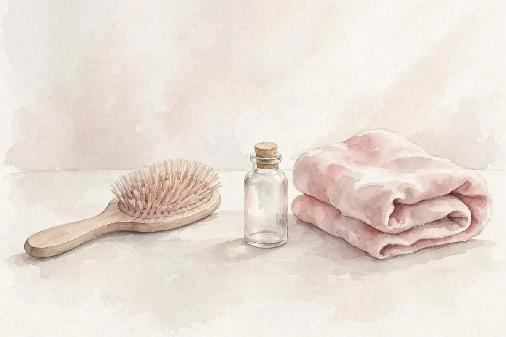

ヘアケア・スカルプは、シャンプーやトリートメント、頭皮まわりのアイテムが中心のカテゴリです。ヘッド施術で頭皮に触れる機会の多い立場から、使い心地の観点を整理して紹介します。

頭皮に触れる仕事から：シャンプー選びで見る3つの観点
成分表示の読み方、泡立ちとすすぎのしやすさ、香りと続けやすさ。ヘッド施術の現場視点で整理しました。
記事を読む

頭皮のベタつき・乾燥感と洗い方の工夫
洗う回数や予洗いの長さなど、感じ方に合わせて洗い方を調整する工夫です。
記事を読む

シャンプーの適量と泡立て方の目安
髪の長さで変わる適量の考え方と、手のひらで泡立てる手順をまとめました。
記事を読む

トリートメントの置く時間と流し方
置く時間の目安の読み方と、流し加減の確かめ方を、施術の手順から紹介します。
記事を読む

頭皮のこわばりチェック（ヘッド施術の現場から）
指で触って確かめる、頭皮の動かし方のセルフチェックのやり方です。
記事を読む

季節で変えるヘアケア
汗ばむ季節と乾燥する季節で、洗い方とアイテムの使い方をどう変えるかです。
記事を読む

カラー・パーマ後の表示の見方
施術後の一定期間についての案内表示の読み方と、美容室への確認の仕方です。
記事を読む

髪と頭皮の日差し対策
帽子と日傘で遮る基本と、髪用アイテムの表示の読み方、帰宅後の手順です。
記事を読む

白髪が気になり始めた時の表示の見方
染毛剤とカラートリートメントの区分表示の違いと、パッチテストの案内確認です。
記事を読む

髪のボリューム感とスタイリング剤の量
量の目安表示を上限に始める考え方と、つける場所、つけすぎた時の直し方です。
記事を読む

サロン専売品と市販品の表示の違い
販売経路の違いと、成分表示のルールは共通であること、選び方の観点です。
記事を読む

子どもと分けるシャンプーの表示確認
対象表示の確認、家族での見比べ方、置き場所とポンプ回数の運用です。
記事を読む

詰め替え用を買う時の確認点
同じ商品かの見比べ方、詰め替えの手順表示と日付の記録、単価の計算です。
記事を読む

静電気が気になる季節のヘアケアの工夫
乾燥する季節の静電気対策を、乾かし方・ブラシ・衣類との組み合わせで考えます。
記事を読む

帽子をかぶる日の頭皮ケア
帽子をかぶる日の蒸れ対策と、帰宅後の洗い方・帽子自体の手入れです。
記事を読む

ロングヘアの絡まり対策とブラシの選び方
毛先からほどく順番と、髪の長さに合うブラシの形・大きさの選び方です。
記事を読む

予洗いの時間とお湯の使い方
シャンプー前の予洗いの時間の目安と、頭皮まで水を通す順番の工夫です。
記事を読む

寝ている間の髪の摩擦を減らす工夫
乾かしてから寝る基本と、髪の置き場所、枕カバーの見方を整理しました。
記事を読む

分け目を変える：頭皮と髪の負担を分散する
分け目を変える意味と、乾かし方で形をつけるコツをまとめました。
記事を読む

プール・海の日の前後のヘアケア
出かける前の準備、水から上がった後のすすぎ、帰宅後の手順です。
記事を読む

宿泊先のアメニティシャンプーの確認点
アメニティの種類の確認と、量を少なめから始める旅先の基本です。
記事を読む

浴室・洗面所の棚の整理と並べ方
使う順番に並べる棚の整理と、水はけ、見直しのタイミングです。
記事を読む

ショートヘアの乾かし方と量の目安
根元から乾かす順番と、表示の半分から始める量の考え方です。
記事を読む

スタイリング剤を付けた日の洗い方
予洗い長めと、シャンプーを2回に分ける整髪料の日の手順です。
記事を読む

頭皮マッサージの手順：施術の現場から
指の腹で頭皮を小さく動かす基本と、場所の順番、力加減の目安です。
記事を読む
梅雨の広がりが気になる日の量の調整
湿気の多い日はまず量の調整から。引き算の工夫も紹介します。
記事を読む

仕事で髪をまとめる日の朝の段取り
前日の夜の準備から始める、まとめ髪の朝の3段階の手順です。
記事を読む

洗髪のお湯の温度の目安
体温より少し高い温度を目安に、季節で調整する考え方です。
記事を読む

サロン帰りに聞く、自宅ケアのメモの取り方
量・順番・期間の3点を聞き、その場で短く残すメモの工夫です。
記事を読む

プレゼントでもらったヘアケアの確認点
用途の確認と少量スタート。もらったアイテムの確認の順番です。
記事を読む

頭皮ローションの表示と使い方：つける場所と量の目安
頭皮ローションは髪ではなく頭皮につけるもの。分け目に沿ったつけ方と量の目安を整理します。
記事を読む

パーマ後のケアアイテム：表示で確認する洗い方と乾かし方
パーマ当日の洗い方の案内と、置く時間・乾かし方の表示の読み方。サロンとの間隔の考え方も。
記事を読む

ウィッグ・つけ毛の手入れ：表示の読み方と保管の工夫
洗えるかどうか、使えるケア用品、耐熱温度。ウィッグの表示の読み方と保管の工夫を整理します。
記事を読む

ヘアフレグランスの使い方と付ける場所
香りは付ける場所と量で変わる。毛先・内側への付け方と、重ね方の考え方を整理します。
記事を読む

くしの素材表示と使い分け：木・竹・プラスチック・金属
木・竹・プラスチック・金属、素材で感触が違う。濡れた髪と乾いた髪の使い分けと、手入れ・替えどきを整理します。
記事を読む
ナイトキャップと就寝時の髪の保護アイテム
寝ている間の摩擦が、朝の髪を決める。素材・サイズ・ゴムの表示の見方と、キャップ以外の方法を整理します。
記事を読む

サロンカラーの間隔の考え方と、ホームケアの表示の見方
根元の伸びと色の落ち方で決める間隔の考え方と、カラー後のホームケアの表示の見方を整理します。
記事を読む

ヘアオイルの量とつける場所：毛先を中心にした使い方の考え方
ヘアオイルの量とつける場所。髪の長さ別の目安、毛先を中心にしたつけ方、乾かす前とあとの使い分けを整理します。
記事を読む